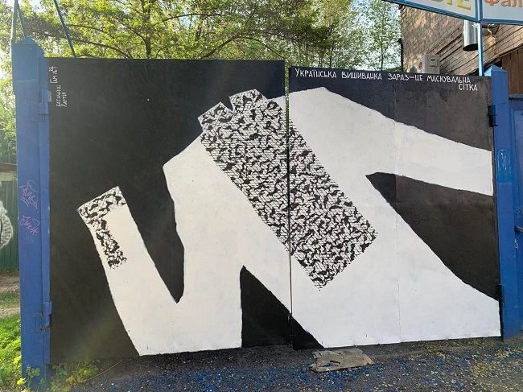

Довго думала над епіграфом з якого почати свою розповідь і згадала вірш сучасного українського письменника Сергія Жадана, який в мене асоціюється з моїм містом
Що ти будеш згадувати про ці часи?
Адже пам’ять змиває всі голоси,
адже пам’ять не пам’ятає жодних імен, жодних назв,
але ти все одно згадуй, згадуй про кожного з нас.
Згадуй про нашу закоханість у твоє лице,
навіть якщо тобі це не подобалось – згадуй про це,
навіть якщо ти не вірила в серйозність наших хвороб,
навіть якщо не сумнівалась у марності наших спроб,
навіть якщо не зможеш згадати наших імен,
і якщо тебе завжди дратував колір наших знамен,
мова наших освідчень,
біографії наших святих,
кількість у наших будинках зброї, вина і книг.
Згадуй усе, що ми писали тобі в листах,
згадуй, скільки нас полягло в чужих містах,
згадуй, скільки з нас зламалося й продалось,
згадуй, хоча б між іншим,
хоча б когось.
Згадуй, як ми ловили твої слова,
згадуй наші поразки й наші дива,
нашу вірність, нашу відвагу, наші страхи,
носи при собі нашу любов, ніби старі гріхи.
Без тебе нічого не буде, хочеш чи ні.
Наші серця, як підводні міни, стоять в глибині.
Згадуй кожну з утеч, згадуй кожну з атак –
скільки зможеш, хоча б до смерті, хоча би так.
У сучасному урбаністичному світі місто відіграє важливу визначну роль у
становленні людини, формуванні суспільної думки та ідеології.
Для мене досі загадка, як Харкову вдалося бути одночасно столицею тоталітарної держави й центром хуліганського авангарду. Тут совєти будували комунізм, «кабінетний вчений» досліджував мая, дизайнери створювали оскароносні костюми, кавова
спільнота народжувала specialty, митці-новатори безупинно експерементували, у результаті чого у нас є цілі школи
Харківської архітектури, фотографії тощо. Цю суперздібність — поєднувати на перший погляд непоєднувані речі — він
зберігає й донині.
Харків дуже різний
Харків — це і університет, і промзони; Харків індустріальний, і я вважаю що це важлива характеристика. Але є і Харків модерний. Місто дещо хаотичне, суперечливе, і це визначає його характер і значення. Можна зайти в метрополітен і зустріти в одному вагоні робітників тракторного заводу і професорів університету Каразіна. Це поєднання різних речей, суміщення різних полюсів. Зводити Харків до однієї концепції конструктивізму чи авангарду, чи депресивного постіндустріального стану, мені здається, це свідомо заплющити очі на багато інших речей.
Харків: духи міста, культурний прорив і мрія футуристів
"Я безумно люблю Город", – як пристрасно викликував Микола Хвильовий
У 1820‑х роках Харків став центром відродження української культури. Тут з’явилися перші видання з мовознавства, історії, літератури та етнографії.
Наприкінці 1920‑х у місті було збудовано будинок "Слово", в якому оселилися відомі українські письменники:
- Микола Хвильовий
- Остап Вишня
- Лесь Курбас
- Павло Тичина
- Михайло Яловий
- Микола Куліш
- Іван Багряний
- Микола Бажан

Будинок був кооперативний, зводили його спеціально для українських письменників та інших діячів культури. Він складався
з 64 просторих, світлих квартир, а також їдальні й солярію, мав обслуговуючий персонал.
Однак, як виявилось, — це була пастка радянської влади.
До 1938 року радянська влада заарештувала мешканців сорока квартир із шістдесяти шістьох наявних у будинку.
Особисто я будинок сприймаю не як будинок жахів. Це мій дім, тут живуть люди і ніяких жахів тут немає, окрім облізлих
стін під’їздів. Я певний час цікавилася історією репресій, яких зазнали мешканці цього будинку. Але тепер зрозуміла, що
не хочу розповідати тільки цю історію.
Я хочу, щоб люди знали про життя і боротьбу з радянською тоталітарною системою. Мені здається, дуже цікаво і потрібно
знати, як письменники боролися, як співіснували, як приятелювали, зрештою, якими вони були людьми".
Тепер Росія провадить репресії і проти будинку. На початку березня 2022 року пам’ятку обстріляли російські війська. На
щастя, ніхто з мешканців не загинув, але постраждало кілька квартир.
"Цілком закономірно для росіян: вони завжди нищили нашу культуру. Щоправда, цього разу в них нічого не вийде.
Росіяни – варвари. А "Слово" ми відбудуємо". Сергій Жадан.
ХАРКІВ СПРАВДІ МОЖНА НАЗВАТИ КРЕАТИВНИМ – ВУЛИЧНІ МУЗИКАНТИ, МУРАЛИ, РОЗВИТОК МАЛОГО БІЗНЕСУ
Всі, хто хоча б раз був у Харкові, знайомі з графічними чорно-білими, іронічними та зворушливими малюнками Гамлета на стінах міста, будівлях, у дворах.
Руйнівні наслідки «русского міра» в Харкові
Дуже боляче, але мій Харків — серед міст, яке найбільше постраждало від широкомасштабного вторгнення росії. Щодня воно піддається бомбардуванням касетними бомбами, крилатими ракетами, артилерійському обстрілу з «Градів» та «Смерчів» На кінець березня серед 135 пам’яток України, що постраждали від бомбардувань окупантів, 39 розташовані в Харкові! І навіть зарах коли я виконую це домашнє завдання по моємі місту летять ракети.
Якщо я напишу про своє місто все, що я вважаю цікавим та важливим то сайт вийде, набагато глибшим за сайт BORJOMI
Чому вам треба хоч раз побувати в Харкові :
- Погуляти центральними вулицями і помилуватися спорудами збудованими сімєю видатних Алчевських, Олексія Бекетова
- Відвідати неймовірні парки :
- Взимку покататись на лижах та на сноуборді в Харківській Швейцарії
- Погодувати альпак в Долині Альпак
- Взяти на прокат ровери і весь день кататись по нейморівним веломаршрутам
- Сходити на шопінг в торгівельний центр в центрі міста Нікольский
- Випити кави зі смачною випічкою в Кулінічах або спробувати особливу харківську піццу в Буфеті
- Піти на побачення до Скверу "Стрілка" або цілуватись на площі архітекторів біля Памятника закоханим
- Відвідати виставку сучасного мистецтва в Ерміловцентр
- Відпочити на поплавати на яхті в https://kharkovgo.com/places/aktivnyj-otdyh/progulki-devichniki-i-fotosessii-na-yahte-v-harkove-na-starom-saltove-i-pechenegah/Старому Салтові (який зараз перебуває в окупації)
- Купити білети і сходити на виставу в театри :
- Покататись в Харківському метрополітені